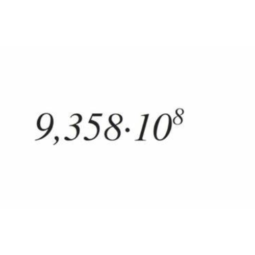
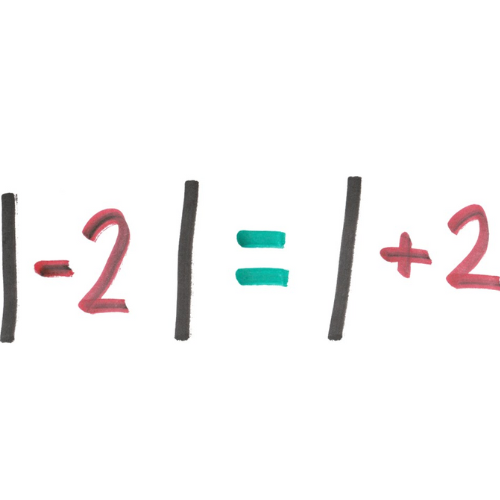
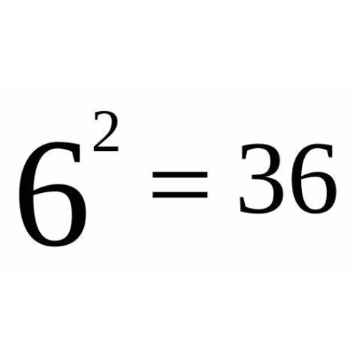
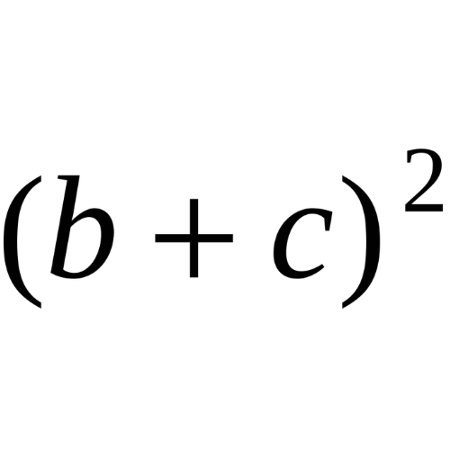
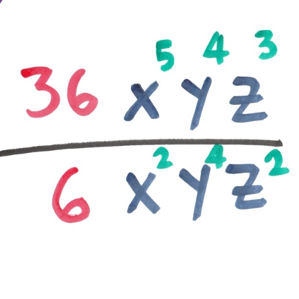
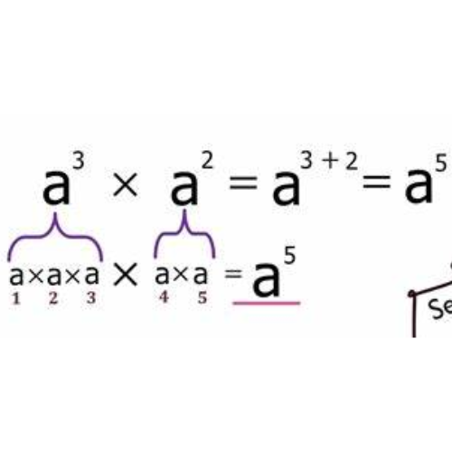
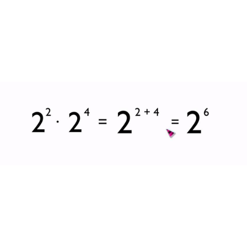

NOTACION
CIENTIFICA
Notacion Cientifica
La notación científica es una forma de representar números para simplificar la forma en que
se escriben. Es indicada sobre todo cuando los números son muy grandes o muy pequeños.
Para comprender mejor estas condiciones vamos a ver algunos ejemplos:
¿Es notación científica?:NO
El exponente n debe ser un número entero en este caso -2/3 no es entero

¿Es notación científica?:NO
El coeficiente a que en este caso es 0.25 debe ser mayor o igual a uno y menor que diez, 0.25 no es mayor o igual que 1.

¿Es notación científica?:NO
La base 10 nunca puede ser cambiada, en este ejemplo se puso un 8.

¿Es notación científica?:SI
El exponente n es entero, en este caso es -6. El coeficiente a que en este caso es 1.23 es mayor o igual que 1 y menor que 10. La base 10 no fue cambiada

¿Cómo pasar de notación científica a decimal?
Al igual que en el caso anterior existe la posibilidad de pasar números o muy grandes o muy pequeños de notación científica a notación decimal.
¿Cómo pasar de decimal a notación científica?
La clave para pasar números decimales muy grandes o muy pequeños a notación científica es el movimiento de la coma y depende si los números que queremos pasar son muy grandes o muy pequeños.
¿Para qué sirve la notación científica?
La notación científica es una forma de expresar números de manera concisa y fácil de manejar, especialmente cuando se trabaja con números extremadamente grandes o pequeños. Esta notación utiliza potencias de 10 para representar un número de manera más compacta. En la notación científica, un número se expresa en la forma: �×10a×10 n
Ejemplos de números en notación científica
En la naturaleza abundan los números muy grandes o muy pequeños, los casos más emblemáticos son:
Número de Avogadro
Especifica la cantidad de partículas que hay en un mol de sustancia, su valor es de 602 200 000 000 000 000 000 000 es decir seiscientos dos mil doscientos trillones de partículas por mol. En notación científica encontrarás el número de Avogadro como 6.022 x 1022 partículas por mol.
Carga eléctrica fundamental
La carga que tienen el protón siendo positivo, o el electrón siendo negativo es de 0,000000000000000016 Coulombs. En notación científica encontrarás la carga eléctrica fundamental equivalente a 1.6 x 10-19 Coulombs.
Masa de un protón
Una de las partes principales del núcleo del átomo y con una carga positiva, el protón tiene una masa de 0,00000000000000000000000166 gramos ¿un poco pequeña no? En notación científica encontrarás la masa de un protón como 1.66 x 10-24 gramos.
Operaciones matemáticas con notación científica
En ocasiones es necesario operar con números que están escritos en notación científica por eso es importante aprender a hacerlo de forma fácil.
Suma y resta de números escritos en notación científica
Para poder sumar o restar números escritos en notación científica es necesario analizar los exponentes de las bases, dependiendo de como estos sean se determina el proceso de solución.
Multiplicación de números escritos en notación científica
El proceso para realizar multiplicación de números escritos en notación científica es un poco más sencillo que el de la suma ya que no importa si los números tienen diferente exponente, simplemente se hace la operación de los coeficientes, se suman las bases y se reescribe de ser necesario en notación científica
División de números escritos en notación científica
El proceso de división de números escritos en notación científica es también muy sencillo, lo primero es dividir los coeficientes, las bases de los exponentes se restan y finalmente se verifica que se cumpla con las condiciones de la notación científica.

DATOS CURIOSOS DE LA NOTACION CIENTIFICA
Notación Estandarizada: La notación científica sigue un formato estándar, lo que facilita la comunicación de datos entre científicos y profesionales de diversas disciplinas en todo el mundo.
Calculadora de Notación Científica a Decimal
Calculadora de Decimal a Notación Científica
Comentarios
-
 anonimous
anonimous
La Teoría del Big Bang -
anonimousss2
La Teoría de la Relatividad General
También te puede interesar
Fisica Moderna Ciencias Naturales Mecanica cuantica Ramas de la Fisica Termodinamica Biofisica Cinematica Ramas de la Fisica Movimientos Mecanica en Fisica Energia en Fisica Geografia Fisica
Reglas

Regla 1 La base es siempre 10

Regla # 3 El valor absoluto del coeficiente es mayor o igual a 1 pero menor que 10

Regla # 2 El exponente es un número entero distinto de cero (+) o (-)

Regla # 4 El coeficiente lleva el signo (+) o (-)
Regla # 5 La mantisa lleva el resto de los dígitos significativos.

Regla # 7 Para dividir 2 números: divida los coeficientes y reste el exponente del divisor del exponente del dividendo

Regla # 6 Para multiplicar 2 números: multiplica los coeficientes y suma los exponentes

Regla # 8 Para sumar o restar 2 números si los exponentes son los mismos: sume o reste los coeficientes, pero mantenga los exponentes iguales
Compartir
¿Tienes alguna teoria?
Dejamelo en los comentarios